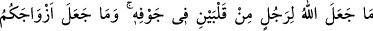
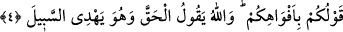
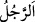

değildir. İşte bu ağır söz ve amel yükleri burada hafifletilir. Öyleyse ittibâ hâlindeyken
bid‘at çıkarmaktan sakın.
Bilesin ki kul, nîmetleri doğrudan elde etmeye muktedir değildir. Allah Teâlâ
vekâletle, dolaylı yollardan nîmetleri kula tahsil ve temin eder. Güzel sonuç takvâ
içindir.
Bazı büyükler şöyle demiştir: “Taleb edebdendir. Çünkü Allah Teâlâ seni ancak
kendisinden istemen için yaratmıştır. Sen ta baştan fakir ve muhtaçsın. Öyleyse cömert
olan Allah’tan iste, istemekte cimri olma. Allah Teâlâ, umûmu içine alan lütuf sâhibidir.
Hevâ ve hevesine uyan maksuduna nâil olamaz. Ta’zim ve edebi terk ederek hizmeti
yerine getiren hüsran ve zarardadır. Böyle hizmet eden kimse Allâh’ın kendisini küçük
düşürdüğü bir makamda kazanç elde edemez. Hizmet eden hizmet ettiği zâtın huzuruna
girdiğinde kalbindeki nifak hastalığı sebebiyle itiraz ediyorsa, onun işve ve naz ile ne
alâkası olur ki? Öyleyse hürmet, teslîmiyet ve tevekkül ile Hakk’a varan bütün yollarda
rağbet edilen şeylere ulaşılır. Allah Teâlâ her şeyden haberdar olan, yâni işlerin tüm
inceliklerini ve gizliliklerini çok iyi bilendir. Kim Allâh’ın her şeyden haberdar
olduğunu bilirse O’nun ilmi ile yetinir, kendinde bulunanları bir tarafa bırakır. Allâh’ın
zikri ile başkasını anmayı unutur. Boş iddiâ, riyâ, gösteriş ve yapmacıklığı terk eder.
Her işte ihlas üzere olur. Çünkü kendisini gözetleyip kontrol eden kimse basîret
üzeredir.
Riyâ için hurma dikmek kolaydır,
Yemek dolu işkembeyi satabilirsin.
Yüce Allah’tan, bu can bedende olduğu sürece bizi takvâ ve ihlas ehlinden kılmasını,
has ve hâlis kullarına katmasını, bize hayırların ve fetihlerin kapısını açmasını niyaz
ederiz.
4. Allah, bir adamın içinde iki kalp yaratmadığı gibi, “zıhâr” yaptığınız eşlerinizi
de analarınız yerinde tutmadı ve evlâtlıklarınızı da öz oğullarınız olarak tanımadı.
Bunlar sizin ağızlarınıza geliveren sözlerden ibarettir. Allah ise gerçeği söyler ve
doğru yola O eriştirir.
“Allah, bir adamın içinde iki kalp yaratmadığı gibi,”
“
” kelimesi, insanın erkeğine mahsustur. Âyette bu kelimenin nekre yapılması ve